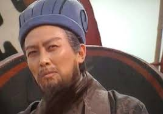
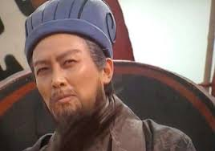

这是场地音乐
这是天使的路段
这是曹操

正确来说27岁前只是一名农民，一名悠闲的教书先生。 被刘备请出山后，27岁~28岁在刘备那里当军师 28岁~刘备当了益州牧时，做了军师将军 到了刘备当汉中王时，诸葛亮连升三品，当了随军军师（即现在的秘书） 到刘备当皇帝时，诸葛亮当了丞相，汜乡侯 刘禅即位后，诸葛亮当了丞相，武乡侯，益州牧 北伐时被赐封为平北大都督、丞相、武乡侯、领益州牧 到了二伐战败时诸葛亮上表自贬为右将军，但仍让领益州牧，平北大都督 到了三战祁山打败司马懿时，被恢复官职为平北大都督、丞相、武乡侯、领益州牧 到死后诸葛亮被追谥为忠乡侯。他想出来用草船借箭

刘备的祖父刘雄被举为孝廉，官至东郡范令。刘备的父亲刘弘早亡，少年刘备与母亲以织席贩履为业，生活非常艰苦。 刘备家屋舍东南角篱上有一桑树高有五丈于，从远处看上去就好像车盖一样，来往的人都觉得这棵树长得不像凡间之物，认为此家必出贵人。 刘备小时候与同宗小孩在树下玩乐，指着桑树说：“我将来一定会乘坐这样的羽葆盖车。”刘备叔父刘子敬说：“你不要乱说话，让我们一家遭灭门之罪。” 他让诸葛亮操一万只箭

刘备少年时拜卢植为师，而后参与镇压黄巾起义、讨伐董卓等活动，因为自身实力有限，刘备在诸侯混战过程中屡屡遭受失败，所以先后依附公孙瓒、陶谦、曹操、袁绍、刘表等多个诸侯。但因其始终 坚持以德服人的行为准则，受到了海内外名士的尊敬，至有陶谦、刘表等放弃让自己的儿子继承基业，而是选择将自己的领地徐州、荆州让给刘备统领。 通过坚持不懈的努力，刘备于赤壁之战后 ，先后拿下荆州、益州，建立了蜀汉政权。而后因为关羽被东吴所害，刘备不听群臣劝阻，执意发动对吴国的战争，结果兵败夷陵，最终于章武三年（223年）病逝于白帝城，终年六十三岁，谥号昭烈皇帝，庙号烈祖葬惠陵。 刘备弘毅宽厚，知人待士，百折不挠，其临死前举国托付给诸葛亮的行为被陈寿赞为古今之盛轨， [1] 后世众多文艺作品以刘备为主角。成都武侯祠有昭烈庙为之纪念。

东汉末年，天下大乱，曹操以汉朝天子刘协的名义征讨四方，对内消灭二袁、吕布、刘表、马超、韩遂等割据势力，对外降服南匈奴、乌桓、鲜卑等，统一了中国北方，并实行一 系列政策恢复经济生产和社会秩序，扩大屯田、兴修水利、奖励农桑、重视手工业、安置流亡人口、实行“租调制”，从而使中原社会渐趋稳定、经济出现转机。 建安十八年（213年），曹操获封魏公，建立魏公国，定都河北邺城，而后进爵魏王。去世后，其子曹丕称帝，追尊曹操为武皇帝，庙号太祖。 曹操喜欢用诗歌、散文来抒发自己政治抱负，反映民生疾苦，是魏晋文学的代表人物，鲁迅赞之为“改造文章的祖师”。同时曹操擅长书法，唐朝张怀瓘《书断》将曹操的章草评为“妙品”。

吴大帝孙权（182年－252年5月21日），字仲谋。吴郡富春县（今浙江省杭州市富阳区）人。三国时期孙吴的建立者（229年－252年在位）。 孙权的父亲孙坚和兄长孙策，在东汉末年群雄割据中打下了江东基业。建安五年（200年），孙策遇刺身亡，孙权继之掌事，成为一方诸侯。建安十三年（208年），与刘备建立孙刘联盟，并于赤壁之战中击败曹操，奠定三国鼎立的基础。建安 二十四年（219年），派吕蒙成功袭取刘备的荆州，使领土面积大大增加。 黄武元年（222年），孙权被魏文帝曹丕册封为吴王，建立吴国。同年，在夷陵之战中大败刘备。黄龙元年（229年），在武昌正式称帝，国号吴，不久后迁都建业。孙权称帝后，设置农官，实行屯田，设置郡县，并继续剿抚山越，促进了江南 经济的发展。在此基础上，他又多次派人出海。黄龙二年（230年），孙权派卫温、诸葛直抵达夷州。 孙权晚年在继承人问题上反复无常，引致群下党争，朝局不稳。于太元元年（252年）病逝，享年七十一岁，在位二十四年，谥号大皇帝，庙号太祖，葬于蒋陵。

张飞（关于这个发音（帮助·信息） ）（卒于公元221年7月或8月），[a]由伊德 （Yide）礼貌提供，是东汉末年 和三国初期，在军阀刘备的带 领下服役的军事将领。中国。 最早加入刘备的张 飞和关羽与他们的领 主建立了兄弟般的关系，并陪同 他进行了大部分早期工作。张飞 在刘备方面进行了各种战斗，包括 “赤壁战役”（208--209） 接管彝族省（212–214）和汉中战役 （217–218）。在那年早些时候由刘 备建立的蜀汉州服役仅几个月后，他 在221年被下属暗杀。[2]张飞是14世纪历史小说 《三国演义》的主要人物之一，该剧对三 国之前和之中的事件进行了戏剧化和浪漫化。 在小说中，张菲在小说开始时在虚构的 《桃园誓言》中与刘备和关羽结了兄弟，并一直忠于誓言直到他去世。

关羽（？—220年），本字长生，后改字云长， 河东郡 解县 （今山西 运城 ）人，雅号“ 美髯公 ”。 早年跟随刘备颠沛流离，辗转各地， 和刘备、 张飞情同兄弟，因而虽然受到了曹操的厚待， 但关羽仍然借机离开曹操，去追随刘备。 赤壁之战后， 关羽助刘备、 周瑜攻打曹仁所驻守的南郡， 而后刘备势力逐渐壮大，关羽则长期镇守荆州 。 建安二十四年，关羽在与曹仁之间的军事摩擦中逐渐占据上风， 随后水陆并进，围襄阳，攻樊城，并利用秋季大雨， 水淹七军，将前来救援的于禁打的全军覆没， 进而包围樊城。 关羽威震华夏， 使得曹操一度产生迁都以避关羽锋锐的想法。 但随后东吴孙权派遣吕蒙 、 陆逊袭击了关羽的后方， 麋芳 、 士仁都背弃关羽。 同时，关羽又在与徐晃的交战中失利， 最终进退失据，兵败被杀。 谥曰壮缪侯 。 关羽去世后，逐渐被神化，民间尊其为“ 关公 ”， 历代朝廷多有褒封，清代奉为“忠义神武灵佑仁勇威显关圣大帝 ”，崇为“ 武圣 ”，与“ 文圣 ” 孔子齐名。 《 三国演义 》 尊其为蜀国“五虎上将”之首， 毛宗岗称其为《演义》三绝中的“义绝”。

在208-209年冬天， 黄改在红崖战役中与曹操的部队作战。他是周瑜的下属，周瑜是孙权在那场战斗中的前线指挥官。[6]黄改告诉周瑜：“与我们相比，敌人的人数多。我担心我们不会持续太久。但是，我观察到曹操的船只是相互联系的，我们可以用火摧毁它们。”然后，黄改准备了大约十艘“猛冲”和“斗鸡”（一种军舰），并向其中装满了开火所需的原料。然后，他给曹操写了一封信，假装他想投降并背叛曹操。曹操告诉黄改的使者：“我只怕这是个把戏。但是，如果黄改说的是真的，我会给他丰厚的回报。” [7] [8] 黄改还准备了一些zouges（走舸；一种较小型的船），将其跟随在menchongs和doujians的后面，他的小型舰队驶向曹操的基地。风从东南吹来。当黄改的船队到达河中时，所有的船都扬起了帆，黄改举起了火炬，指示他的手下大喊：“我们投降！”曹操的部队从营地出来探望，他们说黄改要加入他们的行列。黄盖离敌人基地约20里时，他命令他的士兵放火烧开，他们登上了较小的船。由于风很大，燃烧的船只以极快的速度驶向曹操的军舰，并使其起火。曹操的船全部被烧毁，火焰也迅速蔓延到他在陆地上的营地。然后，周瑜下令对曹操基地发动进攻，并取得了重大胜利。曹操败北后，他与尚存的部队一起向北撤退。[9] [10] 黄盖在战斗中被流箭击中，跌入河中。他被周瑜的人救了下来，他们不认识他，把他留在马桶上。当韩当路过时，黄改设法召集他。韩当认出了黄改的声音，于是朝他冲去。韩当含着泪水，帮助黄盖脱下衣服，使伤口得以治疗，黄盖得以幸免。

赵云死在229年兹隆礼貌，是一位军事将领，住在东汉末朝和中国三国初期。赵云最初是北方军阀公孙赞的下属，后来又服役于另一名军阀刘备，此后伴随他的大部分军事事迹，从长班战役（208）到汉中战役（217–219） ）。在三国时期，他继续在由刘备于221年创立的蜀汉州服役，并参加了第一次北伐战争，直到229年去世。尽管由于信息有限，关于赵云一生的许多事实仍不清楚从历史资料来看，他的生活中的某些方面和活动在民间传说和小说中都被戏剧化或夸大了。在14世纪的历史小说《三国浪漫史》中，他因刘备领导的五虎将军而受到称赞。

乔姐妹的名字没有被记录在历史上，因此在后来，它们被简称为“大乔”（字面“小巧”）和“小巧”（字面“小巧”）。他们来自安徽省安庆市的庐江郡（Lujiang Commandery）的皖县（Wan County）。大乔嫁给了军阀孙策，孙策在三国时期建立了东吴州的基础。肖乔嫁给了周瑜，后者是孙策的将军，后来又接任孙权。[1]孙策开玩笑地对周瑜说：“乔长老和他的两个女儿一直在漫游，所以我相信现在他很高兴能把我们当成他的son子。” [2] 乔姐妹在14世纪历史小说《三国演义》中扮演人物角色，该小说浪漫化了三国时期之前和之中的历史事件。在小说中，用“乔/乔”代替了“桥”的汉字。 在小说中，乔姐妹是某乔国老（乔国老；字面意思是“乔州老”）的女儿，可能指乔玄。在三世纪历史文本《三国志》中，周瑜的传记没有提及乔姐妹的父亲的名字，后者简称为桥公；字面意思是“乔老”或“乔主”。 。历史上乔Q死于184年，[3]而乔姐妹在199年左右与孙策和周瑜结婚，[1] [4]，因此结婚时乔X不可能还活着。因此，乔X成为周瑜传记中提到的“乔宫”的可能性很小。 在小说的第44章中，诸葛亮告诉周瑜，曹操对自己拥有两个乔的渴望在曹操之子曹植的诗《铜雀台赋》中得以体现。 。愤怒的周瑜随后加紧决定，说服孙权与刘备结盟反对曹操。


 



请您选择一下以下的选择